X
X
X
X
El desarrollador web full stack puede crear aplicaciones web dinámicas. Esto se logra en base a los estándares web y utilizando tecnologías web que pueden variar según la pila de desarrollo. Tiene por objetivo la creación de aplicaciones web dinámicas. Como vimos anteriormente, las aplicaciones web dinámicas modifican su contenido en función del usuario que acceden permitiendo mostrar uno u otro contenido dependiendo del usuario y de su interacción para con la aplicación web (ej. Facebook, Instagram, etc.) mientras que las aplicaciones web estáticas muestra siempre el mismo contenido independientemente del usuario visitante (ej. un blog).
Lo que denominamos stack tecnológico, o también denominado stack de soluciones o ecosistema de datos, es un conjunto de todas las herramientas tecnológicas utilizadas para construir y ejecutar una sola aplicación.
FrontEnd
Estructura y estilos: HTML, CSS o framework como Bootstrap
Lenguaje programación: JavaScript, java, PHP o bien pueden ser framework como Angular
Backend
El Backend es aquello que se encuentra del lado del servidor y se encarga de interactuar con bases de datos, verificar maniobras de sesiones de usuarios, montar la página en un servidor y servir todas las vistas creadas por el desarrollador frontend.
Base de datos: puede ser MySQL, PostgreSQL, etc Lenguaje: Java, PHP, etc Web server: Apache, NGINX, etc
El desarrollador full stack es un perfil que tiene conocimiento de lenguajes de programación de Front End, Back End, APIs y Bases de datos. Esta amplitud de conocimiento es muy buscada hoy en día por las empresas, esto significa que al momento de trabajar en un proyecto podrías estar asignado a cualquiera de esas áreas.
.jpg)
.jpg)
Por sus siglas en inglés HTML (Hypertext Markup Language) se lo define como un lenguaje de marcado estándar que nos permite crear y presentar páginas web de una manera versátil y eficiente.
HTML es un lenguaje y como tal tiene su propio vocabulario (palabras) y su propia gramática (reglas).
HTML utiliza "marcas" para etiquetar texto, imágenes y otro contenido para mostrarlo en un navegador Web. Las marcas HTML incluyen "elementos" especiales como head, title,body, header, footer, article, section, p, div, span, img, aside, audio, canvas, datalist, details, embed, nav, output, progress, video, ul, ol , li y muchos otros.
Si quieres especificar que se trata de un párrafo, podrías encerrar el texto con la etiqueta de párrafo. Veamos un ejemplo y su anatomía en la siguiente imagen

Vamos a hablar un poco de los editores de código
Existen muchos editores de código, pero aquí recomendamos algunos, como por ejemplo, Visual Studio Code, Sublime Text, Notepad + + y Atom, entre otros.
Nosotros nos centraremos y utilizaremos para los ejemplos del editor de código a Visual Studio Code. Este editor de código es gratuito, estable, open source, robusto y posee una buena velocidad de trabajo. Estas son algunas de las principales características de Visual Studio Code que es desarrollado y mantenido por Microsoft. A continuación veremos brevemente cómo instalarlo:
1. Desde la pagina oficial de Visual Studio Code descargaremos el archivo para la instalación según el sistema operativo que utilicemos.En este caso mostraremos cómo hacerlo en Windows.
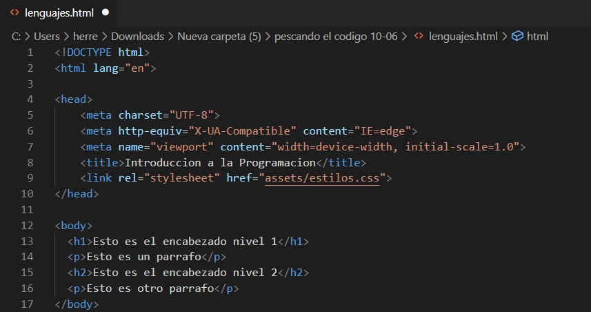2. Una vez descargado el archivo, hacemos clic en la barra inferior a la izquierda,donde se descargó el archivo .exe y ejecutamos el mismo.
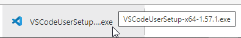3.Se abrirá un cuadro de diálogo y procederemos a la instalación hasta llegar a la finalización de la misma.
4. Luego, una vez instalado procederemos a abrir la aplicación:
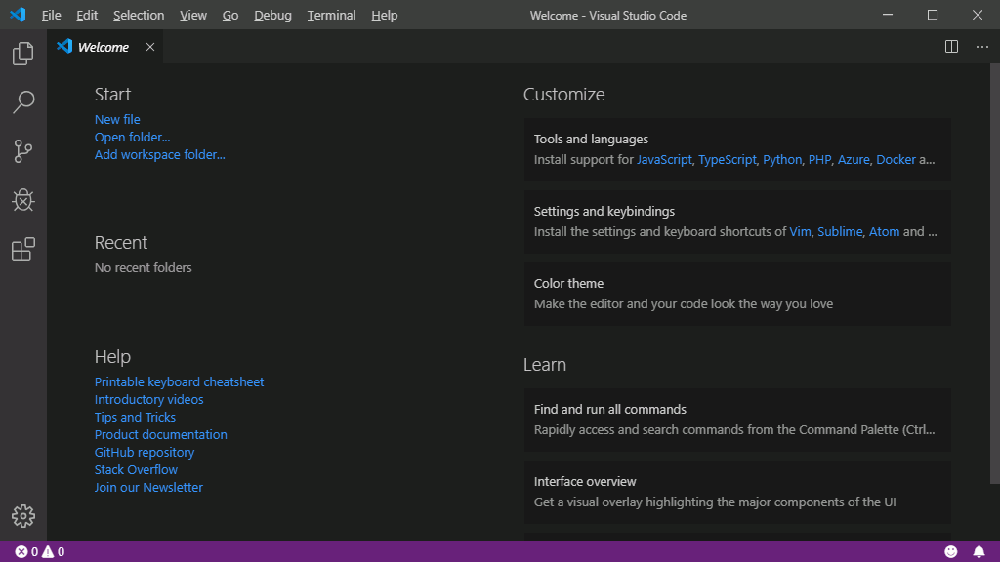La siguiente figura es una visualización abstracta de la estructura de una página HTML.En ella podemos observar lo que representa cada etiqueta y el contenido de texto que mostraría cadaelemento. También podemos visualizar mejor la analogía con la estructura de cajas de cartón.
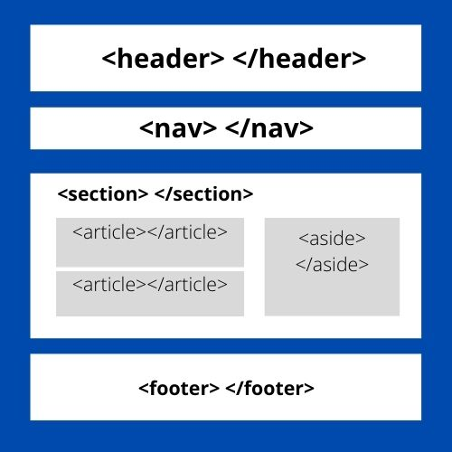El elemento section define una sección en un documento. Según la documentación HTML del W3C: " Una sección es una agrupación temática de contenido, normalmente con un encabezado ". Una página web normalmente se puede dividir en secciones para la introducción, el contenido y la información de contacto.
El elemento artcicle especifica contenido autónomo e independiente. Un artículo debe tener sentido por sí solo y debe ser posible distribuirlo independientemente del resto del sitio web.
El elemento header sirve para especificar contenido de tipo introductorio o un conjunto de enlaces de navegación..
El elemento hfooter define un pie de página para un documento o sección.
El elemento nav representa una sección de una página cuyo propósito es proporcionar enlaces de navegación, ya sea dentro del documento actual o en otros documentos. Ejemplos comunes de secciones de navegación son: menús, tablas de contenido e índices.
El elemento aside representa una sección de una página que consiste en contenido que está indirectamente relacionado con el contenido principal del documento. Estas secciones son a menudo representadas como barras laterales o como inserciones y contienen una explicación al margen como una definición de glosario, elementos relacionados indirectamente, como publicidad, la biografía del autor, o en aplicaciones web, la información de perfil o enlaces a blogs relacionados .
Css es un leguaje que trabaja junto con HTML para proporcionar estilos visuales a los elementos de un documento web. Es utilizado para Para definir estilos en los documentos web, incluyendo el diseño, la disposición de los elementos y para responder a las variaciones en la pantalla en cuanto a diferentes dispositivos y tamaños de pantalla.
Características:
.- Ahorra trabajo. Se puede controlar el diseño de varias páginas HTML a la vez.
.- Se pueden almacenar en archivos * .css
CSS define un conjunto de reglas que permiten describir cada una de las partes que componen los estilos CSS.
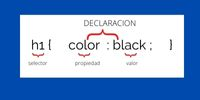Selector Indica el elemento o elementos HTML a los que se aplica la regla CSS.
Declaración Especifica los estilos que se aplican a los elementos.
Propiedad Permite modificar el aspecto de una característica del elemento.
Valor Indica el nuevo valor de la característica modificada en el elemento.
Nos indican qué elemento HTML hay que aplicar el estilo. Una misma regla puede aplicar a varios selectores y, a un mismo selector se le pueden aplicar varias reglas.
Selectores básicos: se utiliza para seleccionar todos los elementos de la página:
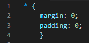Selector de tipo o etiqueta:selecciona todos los elementos de la página cuya etiqueta HTML coincide con el valor del selector:
Selectores básicos: se utiliza para seleccionar todos los elementos de la página:
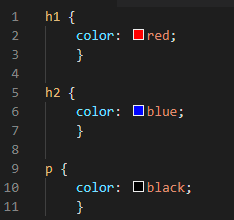Selecciona los elementos que se encuentran dentro de otros elementos. Un elemento es descendente de otro cuando se encuentra entre las etiquetas de apertura y de cierre de otro elemento.
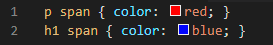La sintaxis formal del selector descendente se muestra a continuación:
elemento1 elemento2 elemento3 ... elementoN
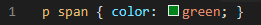Si el código HTML de la página es el siguiente:
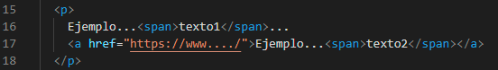El selector p span selecciona tanto texto1 como texto2. El motivo es que en el selector descendente, un elemento no tiene que ser descendiente directo del otro. La única condición es que un elemento debe estar dentro de otro elemento, sin importar el nivel de profundidad en el que se encuentre.
Los selectores descendentes nos permiten aumentar la precisión del selector de tipo o etiqueta. Así, utilizando el selector descendente podemos aplicar diferentes estilos a los elementos del mismo tipo.
Si consideramos el siguiente código HTML de ejemplo:
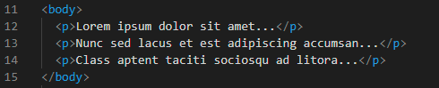¿Cómo podemos aplicar estilos CSS sólo al primer párrafo?
El selector universal (*) no se puede utilizar porque seleccionaría todos los elementos de la página. El selector de tipo o etiqueta (p) tampoco se puede utilizar porque seleccionaría todos los párrafos. Por último, el selector descendente (body p) tampoco se puede utilizar porque todos los párrafos se encuentran en el mismo sitio.
El selector de ID permite seleccionar un elemento de la página a través del valor de su atributo id.Su sintaxis de los selectores de ID es muy parecida a la de los selectores de clase, salvo que se utiliza el símbolo numeral(#)
En html
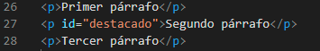En css
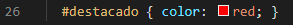Es un lenguaje de scripting multiplataforma y orientado a objetos. Es un lenguaje pequeño y liviano. Dentro de un ambiente de host, JavaScript puede conectarse a los objetos de su ambiente y proporcionar control programático sobre ellos. Se trata de un lenguaje de programación tipo script, basado en objetos y guiado por eventos, diseñado específicamente para el desarrollo de aplicaciones cliente-servidor dentro del ámbito de Internet.
avascript es un lenguaje que distingue entre mayúsculas y minúsculas
Existen dos formas de realizar comentarios: MultiLine o SingleLine. Para el caso de multilínea se utilizan los caracteres “/ *” y “* /” por ejemplo:
/ * Esto es un comentario
multilínea * /
/ Esto es un comentario de una sola línea.
Hola mundo en JavaScript
Como escribir nuestra primer linea de codigo en JavaScript
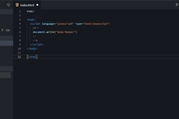Booleano: tipo de instancia === "booleano"
Número: tipo de instancia === "número"
Indefinido: tipo de instancia === "indefinido"
Cadena: tipo de instancia === "cadena"
BigInt tipo de instancia === "bigint
Símbolo: tipo de instancia === "símbolo"
Nulo: tipo de instancia === "objeto". Tipo primitivo especial que tiene un uso adicional para su valor: si el objeto no se hereda, se muestra null."
Objeto: tipo de instancia === "objeto". Tipo estructural especial que no es de datos pero para cualquier instancia de objeto construido que también se utiliza como estructuras de datos: new Object, new Array, new Map, new Set, new WeakMap, new WeakSet, new Date y casi todo lo hecho con la palabra clave nuevo
Funcion:una estructura sin datos, aunque también respondió al operador typeof: typeof instance === "function". Esta simplemente es una forma abreviada para funciones, aunque cada constructor de funciones se deriva del constructor Object.
Declarar significa dar un valor
1. Usando var: declara una variable, inicializándola opcionalmente a un valor. Si bien esta ha sido exclusivamente la forma de declarar variables durante mucho tiempo, sufre de unos efectos no deseados en el alcance (scope) de la declaración. En otras palabras, se aconseja no continuar utilizándola ya que el nuevo estándar de javascript permite otras formas de declaración que corrigen este problema.
El alcance o bloque de ámbito es el lugar en donde es visible esa variable. Por ejemplo, si se declara una variable dentro de una función, esta variable mantiene su valor y es visible sólo dentro de una función.
2. Usando let: declara una variable local en un bloque de ámbito (scope), inicializándola opcionalmente a un valor.
3. Usando const: declara una constante de sólo lectura en un bloque de ámbito. Una constante funciona como una variable pero no cambia su valor, es decir, representa un lugar de almacenamiento de tipos de datos en la memoria pero una vez asignado el valor inicial este no puede ser modificado. La sintaxis de la definición del identificador es la misma que la de las variables.
Las variables se usan como nombres simbólicos para valores en tu aplicación. Los nombres de las variables, llamados identificadores, se rigen por ciertas reglas. Un identificador en JavaScript tiene que empezar con una letra, un guion bajo (_) o un símbolo de dólar ($). Los valores subsiguientes pueden ser números. Debido a que JavaScript diferencia entre mayúsculas y minúsculas, las letras incluyen tanto desde la "A" hasta la "Z" (mayúsculas) como de la "a" hasta la "z". Por ejemplo: